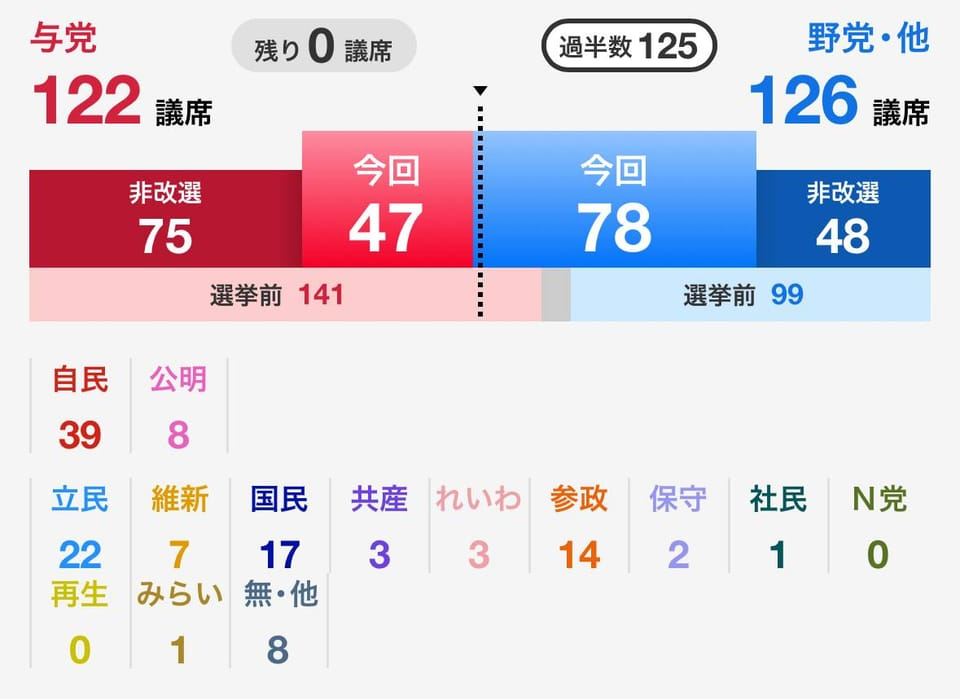

世界苦茶07月21日新闻 | 23条 | 日本参议院选举执政联盟大败反移民党成赢家

日本参议院选举执政联盟大败反移民党成赢家 | 甘肃幼儿园铅中毒案发布新报告 | 中国持续加码投资西藏 | 波兰80个城市爆发反移民示威
今日三条新闻分析
苦茶数据
美元兑人民币：7.18（昨日7.17，前日7.18）
美元兑日元：148.49（昨日148.72，前日148.59）
上证指数：3534（昨日3534，前日3435）
标普500指数：休市（昨日6296，前日6297）
比特币：117151（昨日118009，前日118296）
布伦特原油：69.46（昨日69.28，前日70.12）
中国新闻
• 习特或APEC期间会晤 ：《南华早报》星期天报道，多名消息人士称，今年在韩国举行的亚太经合组织峰会可能是习近平和特朗普今年进行面对面会晤的最佳机会。他们说，特朗普可能在10月30日至11月1日出席APEC峰会之前访华，也可能在APEC会议期间与习近平会面。据韩国媒体报道，习近平计划出席在庆州举行的APEC峰会，但特朗普是否出席尚未确定。
• 甘肃幼儿园铅毒案查处 ：中国甘肃省成立省委省政府调查组，就天水市幼儿园铅中毒事件展开提级调查后，星期天通报，有六人被批捕、17人被立案审查调查。据央视新闻报道，省委省政府调查组星期天通报调查处置情况。通报涵盖案件侦办情况、污染源溯源调查情况、幼儿园园内调查情况、追责问责情况，以及医疗诊治情况五方面。通报指，经公安机关查明，天水市麦积区褐石培心幼儿园厨师贺某霞先后于2024年4月23日、2025年2月20日两次通过网购平台购买彩色颜料。厨师牛某元、文某芳在上述颜料外包装明确标识“不可食用”的情况下，将颜料掺入面粉用于制作玉米卷肠包、三色红枣发糕，从2024年5月至案发，平均每月六次向幼儿和教职员工提供食用。此行为涉嫌构成生产有毒、有害食品罪。 （翻评：现在的情况是，依然是厨师添加，不是环境污染，周边环境依然安全，加了医院伪造数据，但我想已经没有人相信了。）
• 岳阳将建烧烤产业学院 ：中国湖南岳阳将成立烧烤产业学院，预计明年招生，三年内培养1000名烧烤人才。综合中国九派新闻和《湖南日报》报道，岳阳开放大学与岳阳市烧烤协会进行战略合作签约，双方将联合成立岳阳烧烤研究院，开展烧烤产业相关专业的人才培养。《岳阳开放大学与岳阳市烧烤协会产业共建战略协议》签约仪式在星期五举行，宣布共建中国首个聚焦烧烤产业的产教融合实体平台“岳阳烧烤研究院”和“岳阳烧烤产业学院”。
亚太印太新闻
• 日本执政联盟失参院多数 ：日本参议院选举结果出炉，自公执政联盟分别获得改选125个议席中的39个和8个议席，总议席未能过半数。主张“日本人优先”的参政党获得14个议席。日本维新会候选人石平当选，是日本史上首位以中国归化身份参与国政选举并当选的候选人。
• 台湾蓝绿阵营罢免集会拼场 ：台湾大罢免投票进入倒数一星期，蓝绿阵营星期六各自举行大型集会拼场，国民党大咖新北、台中赶场；罢免团体与绿营支持者则在立法院周边集结。双方都试图展现强大气势，凝聚支持者出门投票动力。台湾7月26日举行首次全岛罢免投票，决定在野的24名国民党立委和新竹市长高虹安的去留。这场大罢免可能带来政党版图洗牌，让执政的民进党夺回立法院掌控权。在投票前的超级星期六，即便受到台风外围环流影响，罢免和反罢免双方仍冒着风雨，各自举行大型造势活动，呼吁支持者出门投票。
• 河内禁燃油车政策引争议 ：越南政府计划禁止燃油电单车进入河内市中心，以缓解日益严重的空气污染。但这项绿色转型政策在民间引发不小争议，不少居民担忧经济成本将压垮家庭开支。法新社报道，越南一家庭主妇邓翠幸说：“大家当然都希望环境变好。”但她不满地指出，更换家中四辆电单车为电动版本，至少需花费8000万越盾，这笔开支几乎耗尽家庭多年积蓄。“但为什么要我们先承受这些负担，当局却毫无准备？”拥有900万人口的河内，目前有将近700万辆电单车，是全市最常见的通勤工具。长期以来，燃油电单车尾气被认为是城市污染的主要来源，使河内频繁跻身全球空气质量最差城市之列。世界卫生组织指出，空气污染每年在越南造成至少7万人死亡。
• 韩国强降雨致四死千人撤离 ：韩国多地近日遭遇罕见强降雨侵袭，已造成至少四人死亡，超过1300人被迫撤离家园。随着灾情不断加剧，韩国政府已将气象灾害预警提升至最高等级，并警告恶劣天气仍将持续。英国广播公司报道，遇难者中包括两名80多岁男性，其中一人疑在自家地下室排水时遭遇不测。第三名死者则在车辆被洪水冲走前打电话告诉妻子“车子正在被冲走”，不久后遭墙体倒塌压致身亡，第四名死者则因突发心脏骤停去世。
科技新闻
• 印度传唤谷歌Meta高管 ：两名政府消息人士称，印度打击金融犯罪的机构传唤美国科技巨头谷歌和Meta公司的高管21日前往其总部。该机构正在调查对在线博彩应用的洗钱指控。消息人士透露，印度中央执法局正在调查这些平台是否通过广告为推广和扩大博彩应用的覆盖范围大开方便之门。两家公司的高管被要求于21日前往该局位于首都新德里的总部。另一名政府消息人士指责谷歌和Meta利用其平台推广非法活动，尽管政府警告不要投放任何形式的博彩广告。消息人士还说，该局将就两家公司从博彩应用获得资金一事进行调查，并核查它们是否在宣传或推广其他任何博彩平台。
• 美冰淇淋禁用人工色素 ：美国主要冰淇淋制造商宣布，将逐步停止在他们的产品中使用人工色素。旗下包括40多个全球顶尖冰淇淋品牌的国际乳制品协会7月15日说，他们的成员将在2027年底停止使用石油衍生的人造色素。健康倡导者一直认为，人工色素与注意力不足过动症、癌症、糖尿病、肠胃问题和基因组破坏等疾病有关，而且除了表面染色之外，人工色素没有任何营养或实质效用。
财经新闻
• 汇丰主席将卸任未定接班人 ：汇丰控股董事会主席Mark Tucker将在今年9月底卸任，但截至目前，汇丰还没找到能够接替杜嘉祺的合适人选。英国《金融时报》星期六引述知情人士消息报道，汇丰在考虑了100多名继任者人选后，始终无法确定最终名单。
• 靓家居停业创始人坠亡 ：中国连锁家装品牌靓家居突然宣布停止经营，创始人曾育周据报上星期四坠楼身亡。综合中国每日经济新闻和澎湃新闻报道，从星期五开始，多名靓家居消费者收到了关键内容为公司停止经营的通知。每日经济新闻记者隔天星期六抵达在广州的靓家居总部，当时楼下已有不少消费者与供应商。记者在靓家居所在楼层发现，与家居行业普遍的“周末才是旺季”形成鲜明对比，公司玻璃门紧闭。
• 央企签约西藏助力就业 ：多家中国央企与西藏签署协议，将创造万余就业岗位。据中国央视新闻报道，记者星期天从中国国务院国资委在拉萨召开的国资央企助力西藏高质量发展推进会上获悉，国资央企援藏再升级，一批新项目签约，着力增进民生福祉。此次推进会上，共有16家中央企业与西藏自治区签署75个产业项目投资协议，投资额达3175.37亿元人民币。 （翻评：这应该是应对达赖喇嘛最近继承人危机的经济方面方案。）
• 日钢企利润远超中企 ：中国媒体统计，中国四家最赚钱上市钢企利润之和，不及日本制铁。中国第一财经引述中日两国主要钢铁企业2024年的财务报告报道，日本制铁在去年一年的归母净利润为3502亿日元，约合人民币169亿元。
• 拟禁新车半年内转二手 ：中国汽车工业协会旗下杂志《汽车纵横》报道，工业和信息化部拟推行“新车登记后六个月内禁止转二手”的政策。这份报道6月25日在《汽车纵横》官网发布，星期六在杂志的微信公众号再次发布。报道称，面对“零公里二手车”泛滥的问题，商务部据报在5月召集行业机构及汽车制造商召开闭门会议，明确要求强化全流程监管，建立信用评价体系；工信部也拟推行“新车登记后六个月内禁止转二手”的政策，从源头阻断套利空间。
• 外卖补贴大战持续升温 ：中国国家市场监管总局周五约谈饿了么、美团、京东三家企业，明确要求其停止非理性竞争行为。据了解，补贴大战推动平台订单量显著增长。美团近期连续两个周六公布的战报显示，日均单量分别达1.2亿单、1.5亿单，创历史新高。而在最近两周的工作日，淘宝闪购单日补贴额稳定在四亿元左右。尽管监管层已出手干预，外卖及即时零售平台补贴大战降温幅度有限。记者搜索各平台发现，19日，美团闪购仍向用户推送“美食兑换券”、“下午茶兑换券”等变相补贴；淘宝闪购频道“满25减18”、“满16减16”等高强度满减活动赫然在列；京东秒送亦未退场，持续提供“满20减18”、“满20减12”等大额优惠。
• 中国7月LPR料继续持稳，经济显韧性短期调整尚无契机 ：中国央行周一将发布7月贷款市场报价利率。路透调查显示，6月及上半年经济数据显示经济仍有韧性，且LPR锚定的政策利率，七天逆回购操作利率持稳，7月LPR下调暂无紧迫性与必要性，受访人士一致预计7月LPR将维持不变。
• 中国6月人民币计价FDI规模三个月最高，环比转增七成多 ：路透根据中国商务部公布的数据测算，中国6月份实际使用外资规模增至650.4亿元人民币，创三个月最高，同比跌幅收窄至24.7%；环比转为增长73.9%，为2023年12月以来高点。商务部网站周六刊登的新闻稿显示，1-6月FDI为4232.3亿元人民币，同比下降15.2%。从行业看，制造业实际使用外资1090.6亿元，服务业实际使用外资3058.7亿元。
国际新闻
• 波兰80多个城市爆发反移民示威活动： 周六，波兰80多个城市爆发了以“停止移民”为口号的反移民游行。部分游行活动还伴随着左翼人士的反示威活动。据报道，全国共有100场公众集会。由极右翼自由独立联邦党组织的反移民抗议活动在波兰80多个城市爆发，包括华沙、克拉科夫、波兹南、弗罗茨瓦夫和比亚韦斯托克。示威者要求关闭与立陶宛、乌克兰、白俄罗斯和斯洛伐克的边境。“‘让所有人进来，以后再决定谁是波兰人’的政策已经够多了，”联邦党领导人之一克日什托夫·博萨克在X网站上写道。“波兰男女有权关心自己祖国的安全状况，”他补充道。
• 以色列将资助“让美国再次伟大”及支持特朗普的网红进行巡回活动： 据报道，以色列外交部将资助来自美国的右翼社交媒体网红进行以色列巡回活动。以色列报纸《国土报》周日报道称，此次计划中的巡回活动将有16位网红参加，他们年龄均在30岁以下，支持美国总统唐纳德·特朗普的“让美国再次伟大”和“美国优先”运动。
• 伦敦声援巴勒斯坦55人被捕 ：英国伦敦警方日前在议会广场举行的一场声援“巴勒斯坦行动”组织的抗议集会中，逮捕55人。法新社报道，根据伦敦大都会警察局星期六发布的通报，示威者当天聚集在议会广场，举着支持组织的标语牌。“巴勒斯坦行动”已于7月稍早被当局依据反恐法律列为非法组织。部分抗议者戴着黑白相间的巴勒斯坦方格围巾，被警方带上警车带离现场。
• 美对墨航权政策将报复 ：因不满墨西哥政府削减航班时段及强制货运航空公司迁离墨西哥城主机场，美国特朗普政府星期六说，将对墨方采取报复措施，相关行动或将影响美墨航线的未来运营安排。美国交通部长达菲发声明说，若墨方不正面回应美方对它2022年及2023年相关政策决定的关切，美交通部可能拒绝墨西哥航空公司提出的新航班申请。此外，交通部还提议撤销达美航空与墨西哥航空之间的反垄断豁免，以应对由此带来的市场竞争问题。
• 德国杜塞尔多夫烟花事故伤19人 ：据德国当局消息，德国西部城市杜塞尔多夫星期五晚上举办的一场烟花表演发生意外，造成至少19人受伤，其中四人伤势严重，包括一名儿童。美国有线电视新闻网报道，事故发生在莱茵河畔举行的年度传统节庆活动——“莱茵游乐节”期间。现场画面显示，原本应在高空绽放的烟花在接近地面高度爆炸，导致靠近河岸的观众区域受波及。事故发生后，当地消防部门和紧急救援人员迅速赶赴现场。当地消防局说，警方正就事故原因展开调查。
• 特朗普审查马斯克合约 ：美国总统特朗普与亿万富翁马斯克关系破裂后，特朗普政府已开始审查马斯克的太空探索技术公司与多个联邦政府机构之间的合同。美国《华尔街日报》报道，美国总务管理局要求国防部、国家航空航天局等多家政府机构填写表格，报告与SpaceX的合作情况，并了解同业竞争对手能否更为高效地完成同样的工作。初步评估显示，由于SpaceX在火箭发射和低轨卫星服务方面处于主导地位，大多数政府合同难以取消。此前，特朗普在社媒平台说，节省联邦开支最简单的方法就是“终止”与马斯克公司签署的政府合同。